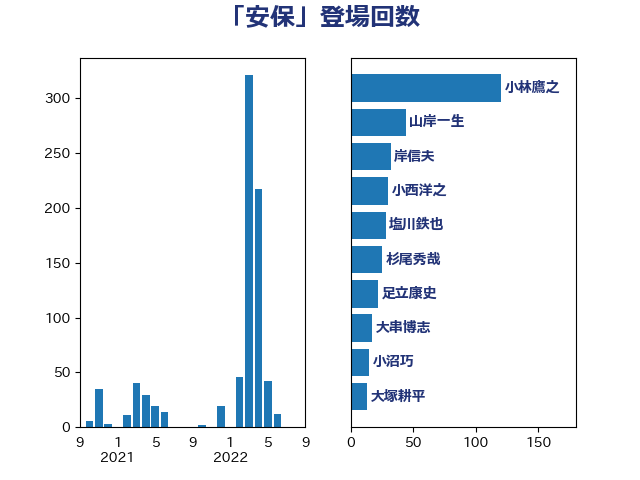

単語「安保」

| 小林鷹之 | 自由民主党 | 120 回 |
| 山岸一生 | 立憲民主党 | 44 回 |
| 岸信夫 | 自由民主党 | 32 回 |
| 小西洋之 | 立憲民主党 | 30 回 |
| 塩川鉄也 | 日本共産党 | 28 回 |
| 杉尾秀哉 | 立憲民主党 | 25 回 |
| 足立康史 | 日本維新の会 | 22 回 |
| 大串博志 | 立憲民主党 | 17 回 |
| 小沼巧 | 立憲民主党 | 15 回 |
| 大塚耕平 | 国民民主党 | 13 回 |
| 田村智子 | 日本共産党 | 12 回 |
| 太栄志 | 立憲民主党 | 11 回 |
| 林芳正 | 自由民主党 | 11 回 |
| 音喜多駿 | 日本維新の会 | 11 回 |
| 赤嶺政賢 | 日本共産党 | 10 回 |
| 阿部司 | 日本維新の会 | 10 回 |
| 大石あきこ | れいわ新選組 | 9 回 |
| 小野泰輔 | 日本維新の会 | 9 回 |
| 篠原豪 | 立憲民主党 | 9 回 |
| 茂木敏充 | 自由民主党 | 9 回 |
| 福島みずほ | 社会民主党 | 7 回 |
| 井上哲士 | 日本共産党 | 6 回 |
| 渡辺周 | 立憲民主党 | 6 回 |
| 鈴木義弘 | 国民民主党 | 6 回 |
| 青柳仁士 | 日本維新の会 | 6 回 |
| 中野洋昌 | 公明党 | 5 回 |
| 伊波洋一 | 無所属 | 5 回 |
| 岩谷良平 | 日本維新の会 | 5 回 |
| 松川るい | 自由民主党 | 5 回 |
| 柴田巧 | 日本維新の会 | 5 回 |
| 森山浩行 | 立憲民主党 | 5 回 |
| 熊谷裕人 | 立憲民主党 | 5 回 |
| 佐藤正久 | 自由民主党 | 4 回 |
| 森本真治 | 立憲民主党 | 4 回 |
| 浦野靖人 | 日本維新の会 | 4 回 |
| 石原宏高 | 自由民主党 | 4 回 |
| 石川大我 | 立憲民主党 | 4 回 |
| 萩生田光一 | 自由民主党 | 4 回 |
| 落合貴之 | 立憲民主党 | 4 回 |
| 古賀友一郎 | 自由民主党 | 3 回 |
| 國重徹 | 公明党 | 3 回 |
| 大西健介 | 立憲民主党 | 3 回 |
| 小山展弘 | 立憲民主党 | 3 回 |
| 新垣邦男 | 立憲民主党 | 3 回 |
| 杉本和巳 | 日本維新の会 | 3 回 |
| 松原仁 | 立憲民主党 | 3 回 |
| 片山大介 | 日本維新の会 | 3 回 |
| 田島麻衣子 | 立憲民主党 | 3 回 |
| 笠井亮 | 日本共産党 | 3 回 |
| 野上浩太郎 | 自由民主党 | 3 回 |
| 野田佳彦 | 立憲民主党 | 3 回 |
| 須藤元気 | 無所属 | 3 回 |
| 一谷勇一郎 | 日本維新の会 | 2 回 |
| 上田清司 | 国民民主党 | 2 回 |
| 中川正春 | 立憲民主党 | 2 回 |
| 吉川ゆうみ | 自由民主党 | 2 回 |
| 和田義明 | 自由民主党 | 2 回 |
| 國場幸之助 | 自由民主党 | 2 回 |
| 城井崇 | 立憲民主党 | 2 回 |
| 堀場幸子 | 日本維新の会 | 2 回 |
| 堤かなめ | 立憲民主党 | 2 回 |
| 岩渕友 | 日本共産党 | 2 回 |
| 岸田文雄 | 自由民主党 | 2 回 |
| 掘井健智 | 日本維新の会 | 2 回 |
| 本庄知史 | 立憲民主党 | 2 回 |
| 浅田均 | 日本維新の会 | 2 回 |
| 石井章 | 日本維新の会 | 2 回 |
| 礒崎哲史 | 国民民主党 | 2 回 |
| 簗和生 | 自由民主党 | 2 回 |
| 舟山康江 | 国民民主党 | 2 回 |
| 蓮舫 | 立憲民主党 | 2 回 |
| 藤木眞也 | 自由民主党 | 2 回 |
| 藤田文武 | 日本維新の会 | 2 回 |
| 重徳和彦 | 立憲民主党 | 2 回 |
| 鈴木敦 | 国民民主党 | 2 回 |
| 馬場伸幸 | 日本維新の会 | 2 回 |
| 高木かおり | 日本維新の会 | 2 回 |
| ながえ孝子 | 無所属 | 1 回 |
| 三浦信祐 | 公明党 | 1 回 |
| 中川郁子 | 自由民主党 | 1 回 |
| 中曽根康隆 | 自由民主党 | 1 回 |
| 中西祐介 | 自由民主党 | 1 回 |
| 井上英孝 | 日本維新の会 | 1 回 |
| 佐藤茂樹 | 公明党 | 1 回 |
| 大島敦 | 立憲民主党 | 1 回 |
| 太田房江 | 自由民主党 | 1 回 |
| 奥下剛光 | 日本維新の会 | 1 回 |
| 山本太郎 | れいわ新選組 | 1 回 |
| 山添拓 | 日本共産党 | 1 回 |
| 山田賢司 | 自由民主党 | 1 回 |
| 岡田克也 | 立憲民主党 | 1 回 |
| 川田龍平 | 立憲民主党 | 1 回 |
| 工藤彰三 | 自由民主党 | 1 回 |
| 市村浩一郎 | 日本維新の会 | 1 回 |
| 徳永久志 | 立憲民主党 | 1 回 |
| 早稲田ゆき | 立憲民主党 | 1 回 |
| 末松義規 | 立憲民主党 | 1 回 |
| 東徹 | 日本維新の会 | 1 回 |
| 柚木道義 | 立憲民主党 | 1 回 |
| 柳ヶ瀬裕文 | 日本維新の会 | 1 回 |
| 森田俊和 | 立憲民主党 | 1 回 |
| 櫻井周 | 立憲民主党 | 1 回 |
| 武部新 | 自由民主党 | 1 回 |
| 池下卓 | 日本維新の会 | 1 回 |
| 泉健太 | 立憲民主党 | 1 回 |
| 浅野哲 | 国民民主党 | 1 回 |
| 浜地雅一 | 公明党 | 1 回 |
| 源馬謙太郎 | 立憲民主党 | 1 回 |
| 玄葉光一郎 | 立憲民主党 | 1 回 |
| 田村貴昭 | 日本共産党 | 1 回 |
| 福山哲郎 | 立憲民主党 | 1 回 |
| 穀田恵二 | 日本共産党 | 1 回 |
| 紙智子 | 日本共産党 | 1 回 |
| 緑川貴士 | 立憲民主党 | 1 回 |
| 緒方林太郎 | 無所属 | 1 回 |
| 西村智奈美 | 立憲民主党 | 1 回 |
| 谷田川元 | 立憲民主党 | 1 回 |
| 越智隆雄 | 自由民主党 | 1 回 |
| 辻元清美 | 立憲民主党 | 1 回 |
| 野間健 | 立憲民主党 | 1 回 |
| 金子恵美 | 立憲民主党 | 1 回 |
| 金村龍那 | 日本維新の会 | 1 回 |
| 鈴木宗男 | 日本維新の会 | 1 回 |
| 長浜博行 | 無所属 | 1 回 |
| 高木啓 | 自由民主党 | 1 回 |
| 高良鉄美 | 無所属 | 1 回 |
| 麻生太郎 | 自由民主党 | 1 回 |